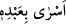
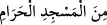

kaplayan nurlar, ruhların, ilimlerin ve amellerin sona vardığı yer, kâbe kavseyn makamı
ve benzerleridir. Bunların bir kısmı da iç âlemin (enfüs) âyetleridir. Nitekim Allah
Teâlâ buyuruyor ki: “Biz onlara ufuklarda ve kendi nefislerinde âyetlerimizi
göstereceğiz.” (Fussılet, 41/53). “Ev ednâ (Hattâ daha da yakın)” (en-Necm, 53/9)
âyeti enfüsün âyetlerindendir. Bu ise muhabbet ve “Hû”nun ihtisası makamıdır.
“Kuluna vahyettiğini vahyetti.” (en-Necm 53/10) âyeti, müsâmere (gayb ve sır
âleminden âriflere gelen Allah’ın hitabı) makamındadır. Bu ise gaybın gaybı olan
Hû’dur. “(Gözleriyle) gördüğünü kalbi yalanlamadı.” (en-Necm, 53/11) âyeti de bunu
te’yid eder. Fuâd, kalbin kalbidir. Kalbin bir görüşü olduğu gibi fuâdın da kendine âid
bir görüşü vardır. Kalbin görüşüne körlük erişebilir. Nitekim Allah Teâlâ: “Fakat asıl
göğüslerdeki kalbler kör olur.” (el-Hac, 22/46) buyurmuştur. Fuâd ise kör olmaz.
Çünkü o, kâinâtı tanımaz. Onun ancak seyyidi (Allah) ile alâkası vardır. Kul burada
bütün yönlerden kuldur. Kulluğunda mutlak olarak tenzih hâlindedir.
Allah Teâla kulunu, bir yerden bir yere ancak gaybdeki âyetlerinden bir kısmını ona
göstermek için nakletmiştir (yürütmüştür). Sanki Allah Teâlâ şöyle buyurmuştur: “Ben
kulumu bana değil, sadece âyetlerimi ona göstermek için gece yürüttüm. Çünkü mekân
beni sınırlamaz, zaman kayıt altına alamaz. Zamanların ve mekanların nisbeti tek bir
nisbetedir. Ben kulumun kalbine sığarım. O halde nasıl onu kendime yürüteyim. Ben
onun yanındayım; inerken, dururken, çıkarken nerede olursa olsun onunlayım.
“ (Muhammed) kulunu” Burada ubûdiyet/kulluk makamının şerefine işâret
vardır. Fahreddîn Râzî tefsîrinde der ki: Ubûdiyet/kulluk risâletten daha üstündür.
Çünkü ubûdiyyet ile halktan Hakk’a dönülür ki bu cem‘ makamıdır. Risâlet ile Hak’tan
halka dönülür ki bu da fark makamıdır. Ubûdiyet/kölelik, işlerini efendisine havâle
etmektir. Efendisi de onun işlerinin ıslahını uhdesine almıştır. Risâlet ise ümmetin
işlerini yüklenmektir. İkisi arasında büyük fark vardır.
Âyette “peygamberini” değil “kulunu” ifâdesi kullanılmıştır. Bu ise O’nda hem
peygamberlik hem de ilahlık olduğu vehmine düşülmemesi içindir. Nitekim insanlar Îsâ
(a.s.)’ın beşerî âdetlere ve hallere muhâlif olarak bu âlemden sıyrıldığı ve mele-i a‘lâya
bedeni ile yükseldiği vehmine düştüler.
“  Mescid-i Harâm’dan”
Rivâyetlerin en sahihine göre isrâ, Ebû Tâlib’in kızı Ümmü Hânî’nin evinden
başlamıştır.[2] Onun evi Harem dâhilinde idi. Harem’in tamamı mesciddir. Ulemânın
belirttiğine göre Harem bölgesinin sınırı, Medine tarafından üç mil, Irak yolundan yedi
mil, Ci‘râne yolundan dokuz mil, Tâif yolundan altı mil, Cidde yolundan on mildir.
Rasûlullah (s.a.)’in ihram için tayin ettiği beş mîkat yeri Harem bölgesinin çevresini
oluşturur. Harem hududları da Mescid-i Haram’ın çevresini, Mescid-i Haram da
Beytullah’ın çevresini oluşturur.
Beytullah ilâhî zâta, Mescid-i Haram ilâhî sıfatlara, Harem bölgesi ilâhî fiillere,
mîkatın harici de ilâhî eserlere işâret eder. Her kim ziyâret veya başka bir maksadla